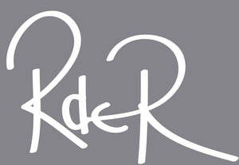
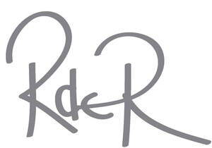
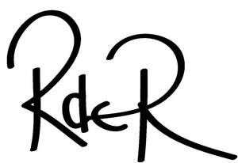

Trade Mark Journal No.2026/012 20 March 2026
UK00004340500 13 February 2026 (4,8,9,11,16,18,19,20,21,24,25,26,27,42)
Mark 1

Mark 2

Mark 3

The grey background colour in the first mark in the series is not part of the trade mark. This colour serves solely as background.
- Class 4
- Candles; Perfumed candles; Scented candles; Soy candles; Tealight candles.
- Class 8
- Cutlery; Table cutlery [knives, forks and spoons]; Boxes adapted for cutlery.
- Class 9
- Magnets; Decorative magnets; Refrigerator magnets.
- Class 11
- Lamps; Lampshades; Lamp casings; Lamp stands; Light bulbs; Electric light bulbs; LED light bulbs; Smart light bulbs; Shower screens; Fridge freezers; Fridges.
- Class 16
- Printed matter; Printed publications; Art prints; Art paper; Art pictures; Art etchings; Drawings; Fine art prints; Printed art reproductions; Paintings; Paintings [pictures], framed or unframed; Works of art of paper; 3D wall art made of paper; 3D wall art made of card; Canvas prints; Works of art and decorations, including figurines, made primarily of paper or cardboard; Canvas for painting; Painting canvas; Canvas boards; Artists’ canvas Illustration boards; Printed stories in illustration form; Graphic representations; Graphic art prints; Graphic art books; Books; Colouring books; Booklets; Magazines; Newsletters; Stationery; Pens; Cards; Greetings cards; Postcards; Notecards; Notelets; Calendars; Diaries; Packaging; Wrapping paper; Posters; Prints; Wall decorations of paper; Paper napkins; Table mats of card; Table mats of paper.
- Class 18
- Bags; Handbags; Clutch bags; Evening bags; Shoulder bags; Luggage; Suitcases; Luggage label holders; Travel baggage; Travel bags; Travel cases; Briefcases and attaché cases; All-purpose carrying bags; Holdalls; Tote bags; Backpacks; Beach bags; Purses; Wallets; Pouches; Waist bags; Wash bags for carrying toiletries; Make-up bags; Cosmetic bags; Beauty cases; Umbrellas; Umbrellas and parasols; Umbrella covers; Sun umbrellas.
- Class 19
- Tiles; PVC tiles; Wooden tiles; Earthenware tiles; Glass tiles; Paving tiles; Ceramic tiles; Natural stone tiles; Ceramic wall tiles; Ceramic floor tiles.
- Class 20
- Window blinds; Indoor blinds; Paper blinds; Blackout blinds [indoor]; Cushions; Chair cushions; Pillows; Stuffed pillows; Throw pillows; Mirrors; Decorative mirrors; Printed mirrors; Wall mirrors; Works of art of plastic; Works of art made of wax.
- Class 21
- Tableware; Glass tableware; Ceramic tableware; Plastic place mats; Vinyl place mats; Plates; Charger plates; Decorative plates; Bowls; Mugs; Coffee mugs; Ceramic mugs; Glass mugs; Earthenware mugs; Cups and mugs; Cups; Drinking cups; Saucers; Coasters (tableware); Crockery; Kitchen utensils; Baking utensils; Household utensils; Pots; Cooking pots; Metal pans; Cooking pans; Frying pans Candlesticks; Candle holders; Soap dishes; Toothbrushes; Electric toothbrushes; Manual toothbrushes; Works of art made of glass; Works of art made of porcelain; Works of art made earthenware.
- Class 24
- Curtains; Curtain fabric; Curtain material; Window curtains; Cushion covers; Cushion covering materials; Pillowcases; Pillow covers; Pillow slips; Bed linen; Bed covers; Bedsheets; Bedspreads; Bed blankets; Throws; Blanket throws; Bed throws; Throws (furniture coverings); Table linen; Table covers; Table cloth; Textile table cloths; Table runners; Table napkins of textile; Table mats, made of textile materials; Table place setting mats of textile; Towels; Bath towel; Hand towels; Kitchen towels; Tea towels; Towels of textiles; Bath sheets; Canvas; Canvas for tapestry; Tapestry [wall hangings] of textile; Mural hangings [textile].
- Class 25
- Clothing, footwear and headgear; Outerwear; Jackets [clothing]; Scarves; Neck scarves; Head scarves; Ties; Bow ties; Cravats; Gloves; Mittens; Socks.
- Class 26
- Hair bands; Hair scrunchies; Hair pins; Hair slides; Hair barrettes; Hair clips; Hair decorations; Claw clips [hair accessories].
- Class 27
- Carpets, rugs and mats; Carpeting; Carpet runners; Bathroom rugs; Door mats; Bath mats; Floor mats; Wallpaper; Textile wallpaper; Non-textile wallpaper; Mural hangings [non-textile].
- Class 42
- Product design; Design services; Design services for artwork; Visual design; Design consultancy; Art work design; Graphic art design; Graphic illustration design; Graphic illustration design services; Illustration services (design); Textile design services; Custom design services; Design of furniture; Design of furnishings; Design of stationery; Fashion design; Animation design for others; Animation and special-effects design for others.
Rachel de Roeper
Representative: Stone King LLP